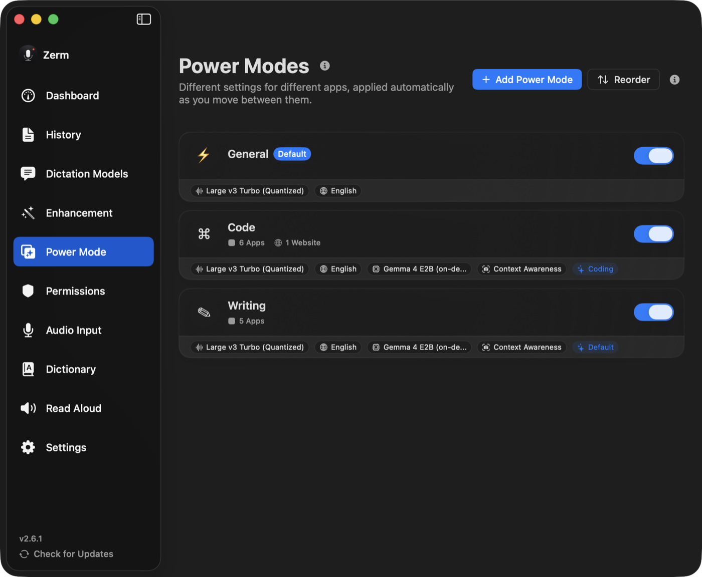

Context
Power Mode
Swap your dictation settings automatically based on the app you are in — or the website you are on.
A Power Mode is a named bundle of dictation settings that switches itself on when you
are somewhere specific. Writing in Mail should not use the same prompt as dictating a
commit message into a terminal, and Power Mode is how Zerm stops you switching those by
hand.
Each mode carries its own transcription model, language, enhancement setting, formatting
rules, and optional auto-send key. When a mode activates, those settings replace your
current ones for the duration of the recording.

What triggers a mode
Every mode can list applications, websites, or both. When you start a recording, Zerm
resolves which mode applies in a fixed order:
- Website. If the frontmost app is a supported browser, Zerm reads the URL of the
active tab and looks for a mode whose website list matches it. - Application. Otherwise — or if no website matched — Zerm looks for a mode whose
application list contains the frontmost app. - Default. If neither matched, the mode marked as default applies.
Disabled modes are skipped at every step. Where two enabled modes could both match, the
first one in the list wins, so drag the more specific mode above the general one.
Application triggers
Applications match on bundle identifier, exactly. You pick them from a list of installed
apps rather than typing a name, so there is nothing to get wrong — but it also means a
mode attached to Visual Studio Code will not fire for a different build of the same
editor.
Website triggers — how matching really works
This is the part the interface does not spell out, and it surprises people.
A website trigger is a substring match on a cleaned URL. Before comparing, Zerm
lowercases both the current URL and the one you configured, and strips https://,
http:// and www. from each. It then checks whether the cleaned current URL
contains the cleaned trigger.
So a trigger of github.com matches all of these:
| Current URL | Matches |
|---|---|
https://github.com/arcusis/Zerm |
yes |
https://www.github.com |
yes |
https://gist.github.com/someone |
yes |
https://notgithub.com.example.net |
yes — the string still appears |
Two consequences worth knowing:
- A short trigger catches more than you expect.
mailmatchesgmail.com,
mail.proton.me, and any page withmailanywhere in its path or query string. - Only the scheme and
www.are stripped. Everything else — subdomain, path, query —
is still part of the string being searched, so you can scope a mode to
github.com/arcusisordocs.google.com/spreadsheetsif you want it narrower.
Reading the active tab's URL uses AppleScript, so macOS will ask for Automation
permission for that browser the first time. Decline it and website triggers simply never
match; application triggers keep working.
Supported browsers: Safari, Chrome, Edge, Brave, Firefox, Zen, Arc, Opera, Vivaldi,
Orion, and Yandex.
The default mode
Exactly one mode is marked as the default. It is what applies everywhere you have not
configured something more specific, which in practice is most of your Mac. Zerm ships
with three modes seeded on first launch:
- General — the default. No app or website triggers, enhancement off.
- Code — Cursor, Visual Studio Code, Xcode, Terminal, iTerm, Warp, plus the website
triggergithub.com. - Writing — Mail, Notes, Chrome, Safari.
They are ordinary modes. Rename them, retrigger them, or delete them.
What a mode can change
Transcription model. Each mode can pin its own model. A mode used for quick replies
can run a small local model while a mode used for long-form dictation runs a large one.
Language. Pinned per mode too, so a mode for one language does not force you to
change the global setting every time you switch.
AI enhancement. A mode can turn enhancement on or off, and select which prompt,
which provider, and which model to use when it is on. This is the most common reason to
create a mode: a prompt that formats email is wrong for a terminal.
Screen context. Whether the enhancement gets to see on-screen text. See
contextual awareness.
Formatting. Text formatting, punctuation cleanup, and forcing lowercase output are
each per-mode. Lowercase plus punctuation removal is a common combination for chat and
commit messages.
Auto-send. A mode can press a key for you once the text is inserted: Return,
Shift + Return, or Command + Return. Set on a mode scoped to a chat app, this turns
dictation into speak-and-send. Leave it as None everywhere you might still want to edit
before sending.
Per-mode keyboard shortcuts
A mode can be given its own shortcut, which activates that mode and starts recording in
one press — useful when you want a specific mode regardless of where you are.
While the recorder is on screen, ⌘1 through ⌘0 select the first ten modes directly. That
is the same key range used for enhancement prompts; which one it drives depends on what
the recorder is showing.
Persisting preferences
By default, whatever a mode changed is reverted when the recording finishes. Turn on
Persist Configured Preferences in Settings and the mode's settings stay active until
a different mode activates instead. Use it if you find yourself surprised that a model
switch did not stick.
Turning Power Mode off
The master toggle in Settings will not switch off while any mode is still enabled — Zerm
tells you to disable or remove the modes first, rather than silently keeping matching
logic running behind a switch that reads off.